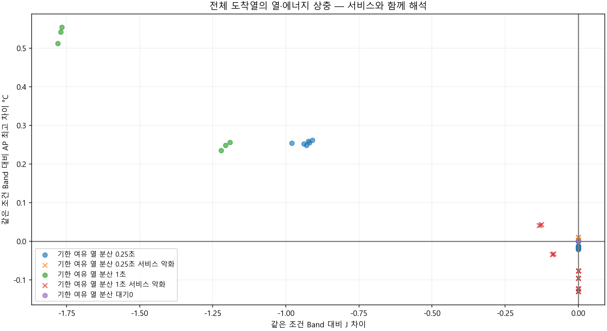
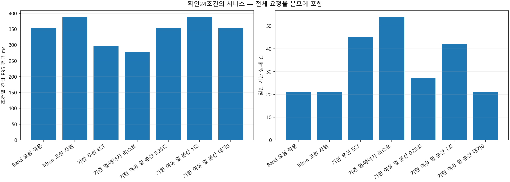
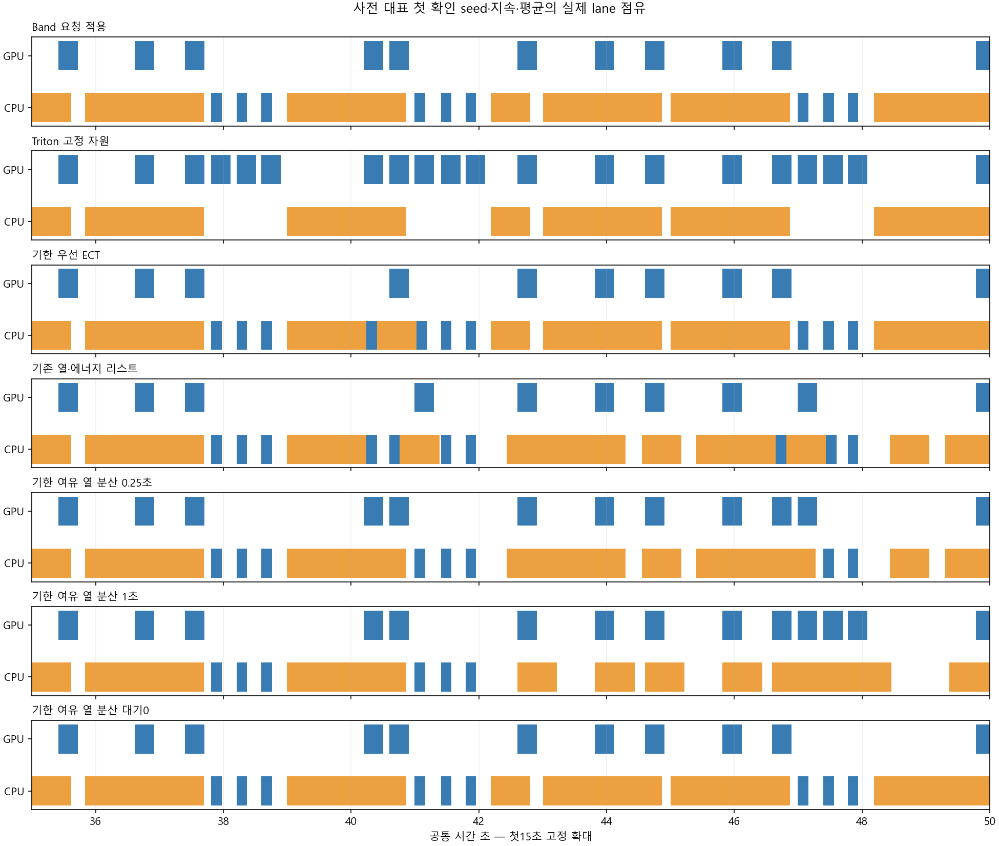
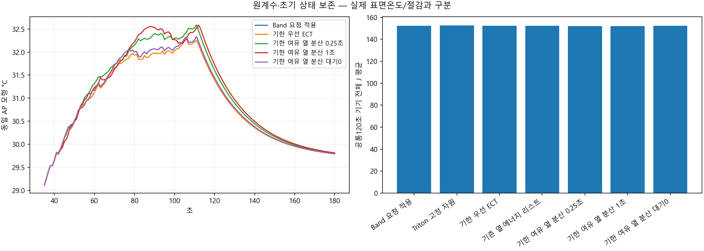
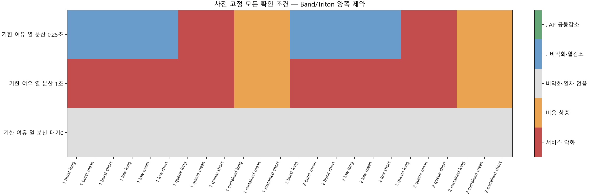

전체 도착 요청 · 개발24조건 뒤 선택 동결 · 별도 확인24조건 · 7규칙. 산업공학 요소는 EDD·응답 여유·호환성·첫 행동 후 재계획입니다.
개발 선택: None, 확인 적격: False. 물리적 절감이나 실제 표면온도 우위가 아닙니다.
설계·판정·한계 · 전체 확인 CSV · 대기 제거 비교
| 규칙 | 판단 차이 |
|---|---|
| Band 요청 적용 | 원 Band 요청 규칙 |
| Triton 고정 자원 | 원 Triton 고정 resource 규칙 |
| 기한 우선 ECT | 기한 순서·5단계 ECT |
| 기존 열·에너지 리스트 | 기존 EDD suffix·J/AP 리스트 |
| 기한 여유 열 분산 0.25초 | Band fallback·EDD/여유시간 후보·열계획·0.25초 |
| 기한 여유 열 분산 1초 | 같은 후보·열계획·누적1초 대기 |
| 기한 여유 열 분산 대기0 | 같은 후보·열계획·대기0 |
| 정책 | 완료 | 예정 | 긴급 실패 | 일반 실패 | P95 평균 ms | J 평균 | AP 평균 | 양 기준 대비 열감소 | 공동감소 |
|---|---|---|---|---|---|---|---|---|---|
| Band 요청 적용 | 1584 | 1584 | 0 | 21 | 354.70825 | 152.27263 | 30.857302 | 0 | 0 |
| Triton 고정 자원 | 1584 | 1584 | 0 | 21 | 389.17693 | 152.76077 | 30.907542 | 0 | 0 |
| 기한 우선 ECT | 1584 | 1584 | 0 | 45 | 297.72793 | 152.40144 | 30.814867 | 0 | 0 |
| 기존 열·에너지 리스트 | 1584 | 1584 | 0 | 54 | 279.07625 | 152.30047 | 30.794409 | 9 | 3 |
| 기한 여유 열 분산 0.25초 | 1584 | 1584 | 0 | 27 | 354.70825 | 152.03932 | 30.914321 | 12 | 0 |
| 기한 여유 열 분산 1초 | 1584 | 1584 | 0 | 42 | 389.17693 | 151.87338 | 30.903096 | 0 | 0 |
| 기한 여유 열 분산 대기0 | 1584 | 1584 | 0 | 21 | 354.70825 | 152.27263 | 30.857302 | 0 | 0 |
| seed | 부하 | 문맥 | 후보 | 판정 | Band J 차이 | AP 차이 | P95 차이 ms | 일반 지연 ms |
|---|---|---|---|---|---|---|---|---|
| 813020101 | low | mean | Triton 고정 자원 | 서비스 악화 | 0.28555104 | 0.039979755 | 137.8747 | 0 |
| 813020101 | low | mean | 기한 우선 ECT | 비악화·열차 없음 | 0 | 0 | 0 | 0 |
| 813020101 | low | mean | 기존 열·에너지 리스트 | J 비악화·열감소 | 0 | -0.012845955 | 0 | 83.333333 |
| 813020101 | low | mean | 기한 여유 열 분산 0.25초 | J 비악화·열감소 | 0 | -0.012845955 | 0 | 83.333333 |
| 813020101 | low | mean | 기한 여유 열 분산 1초 | 서비스 악화 | -0.0864937 | -0.033112999 | 137.8747 | 1431.9609 |
| 813020101 | low | mean | 기한 여유 열 분산 대기0 | 비악화·열차 없음 | 0 | 0 | 0 | 0 |
| 813020101 | low | short_context | Triton 고정 자원 | 서비스 악화 | 0.26363747 | 0.03886654 | 130.42855 | 0 |
| 813020101 | low | short_context | 기한 우선 ECT | 비악화·열차 없음 | 0 | 0 | 0 | 0 |
| 813020101 | low | short_context | 기존 열·에너지 리스트 | J 비악화·열감소 | 0 | -0.012896353 | 0 | 83.333333 |
| 813020101 | low | short_context | 기한 여유 열 분산 0.25초 | J 비악화·열감소 | 0 | -0.012896353 | 0 | 83.333333 |
| 813020101 | low | short_context | 기한 여유 열 분산 1초 | 서비스 악화 | -0.089195121 | -0.033887984 | 130.42855 | 1430.836 |
| 813020101 | low | short_context | 기한 여유 열 분산 대기0 | 비악화·열차 없음 | 0 | 0 | 0 | 0 |
| 813020101 | low | long_context | Triton 고정 자원 | 서비스 악화 | 0.30746461 | 0.041093365 | 145.32086 | 0 |
| 813020101 | low | long_context | 기한 우선 ECT | 비악화·열차 없음 | 0 | 0 | 0 | 0 |
| 813020101 | low | long_context | 기존 열·에너지 리스트 | J 비악화·열감소 | 0 | -0.012798237 | 0 | 83.333333 |
| 813020101 | low | long_context | 기한 여유 열 분산 0.25초 | J 비악화·열감소 | 0 | -0.012798237 | 0 | 83.333333 |
| 813020101 | low | long_context | 기한 여유 열 분산 1초 | 서비스 악화 | -0.083792282 | -0.032338661 | 145.32086 | 1433.0259 |
| 813020101 | low | long_context | 기한 여유 열 분산 대기0 | 비악화·열차 없음 | 0 | 0 | 0 | 0 |
| 813020101 | queue | mean | Triton 고정 자원 | 비용 상충 | 0.017022079 | 0.01245079 | 0 | 0 |
| 813020101 | queue | mean | 기한 우선 ECT | 서비스 악화 | 0.12974055 | -0.046993685 | 0 | 385.50464 |
| 813020101 | queue | mean | 기존 열·에너지 리스트 | 서비스 악화 | 0.12974055 | -0.072834615 | 0 | 636.46973 |
| 813020101 | queue | mean | 기한 여유 열 분산 0.25초 | 서비스 악화 | 7.1293016e-10 | 0.010159155 | 0 | 196.41636 |
| 813020101 | queue | mean | 기한 여유 열 분산 1초 | 서비스 악화 | 0 | -0.12262714 | 0 | 621.44548 |
| 813020101 | queue | mean | 기한 여유 열 분산 대기0 | 비악화·열차 없음 | 0 | 0 | 0 | 0 |
| 813020101 | queue | short_context | Triton 고정 자원 | 비용 상충 | 0.015671369 | 0.011929592 | 0 | 0 |
| 813020101 | queue | short_context | 기한 우선 ECT | 서비스 악화 | 0.13379268 | -0.045245898 | 0 | 385.50464 |
| 813020101 | queue | short_context | 기존 열·에너지 리스트 | 서비스 악화 | 0.13379268 | -0.07087899 | 0 | 638.71947 |
| 813020101 | queue | short_context | 기한 여유 열 분산 0.25초 | 서비스 악화 | 0 | 0.010291033 | 0 | 199.26871 |
| 813020101 | queue | short_context | 기한 여유 열 분산 1초 | 서비스 악화 | 0 | -0.1218169 | 0 | 623.69522 |
| 813020101 | queue | short_context | 기한 여유 열 분산 대기0 | 비악화·열차 없음 | 0 | 0 | 0 | 0 |
| 813020101 | queue | long_context | Triton 고정 자원 | 비용 상충 | 0.018372788 | 0.012972172 | 0 | 0 |
| 813020101 | queue | long_context | 기한 우선 ECT | 서비스 악화 | 0.12568842 | -0.048743743 | 0 | 385.50464 |
| 813020101 | queue | long_context | 기존 열·에너지 리스트 | 서비스 악화 | 0.12568842 | -0.075569802 | 0 | 620.45083 |
| 813020101 | queue | long_context | 기한 여유 열 분산 0.25초 | 서비스 악화 | -7.1293016e-10 | 0.010033908 | 0 | 193.71581 |
| 813020101 | queue | long_context | 기한 여유 열 분산 1초 | 서비스 악화 | 0 | -0.12342143 | 0 | 619.31546 |
| 813020101 | queue | long_context | 기한 여유 열 분산 대기0 | 비악화·열차 없음 | 0 | 0 | 0 | 0 |
| 813020101 | burst | mean | Triton 고정 자원 | 비악화·열차 없음 | 0 | 0 | 0 | 0 |
| 813020101 | burst | mean | 기한 우선 ECT | 서비스 악화 | 0.0864937 | -0.055058672 | -129.43329 | 229.46705 |
| 813020101 | burst | mean | 기존 열·에너지 리스트 | 서비스 악화 | 0.1729874 | -0.11953002 | -367.912 | 665.02128 |
| 813020101 | burst | mean | 기한 여유 열 분산 0.25초 | J 비악화·열감소 | 0 | -0.019627416 | 0 | 20.98014 |
| 813020101 | burst | mean | 기한 여유 열 분산 1초 | 서비스 악화 | 0 | -0.12984787 | 0 | 984.1062 |
| 813020101 | burst | mean | 기한 여유 열 분산 대기0 | 비악화·열차 없음 | 0 | 0 | 0 | 0 |
| 813020101 | burst | short_context | Triton 고정 자원 | 비악화·열차 없음 | 0 | 0 | 0 | 0 |
| 813020101 | burst | short_context | 기한 우선 ECT | 서비스 악화 | 0.089195118 | -0.055227773 | -112.32544 | 229.46705 |
| 813020101 | burst | short_context | 기존 열·에너지 리스트 | 서비스 악화 | 0.17839024 | -0.11815102 | -352.46526 | 668.11467 |
| 813020101 | burst | short_context | 기한 여유 열 분산 0.25초 | J 비악화·열감소 | 0 | -0.020888279 | 0 | 23.591444 |
| 813020101 | burst | short_context | 기한 여유 열 분산 1초 | 서비스 악화 | 0 | -0.13034822 | 0 | 986.35594 |
| 813020101 | burst | short_context | 기한 여유 열 분산 대기0 | 비악화·열차 없음 | 0 | 0 | 0 | 0 |
| 813020101 | burst | long_context | Triton 고정 자원 | 비악화·열차 없음 | 0 | 0 | 0 | 0 |
| 813020101 | burst | long_context | 기한 우선 ECT | 서비스 악화 | 0.16758456 | -0.093554291 | -383.35875 | 440.57674 |
| 813020101 | burst | long_context | 기존 열·에너지 리스트 | 서비스 악화 | 0.16758456 | -0.11787104 | -356.60225 | 722.19144 |
| 813020101 | burst | long_context | 기한 여유 열 분산 0.25초 | J 비악화·열감소 | 0 | -0.018442361 | 0 | 18.507804 |
| 813020101 | burst | long_context | 기한 여유 열 분산 1초 | 서비스 악화 | 0 | -0.12941572 | 0 | 981.97619 |
| 813020101 | burst | long_context | 기한 여유 열 분산 대기0 | 비악화·열차 없음 | 0 | 0 | 0 | 0 |
| 813020101 | sustained | mean | Triton 고정 자원 | 비용 상충 | 1.6387 | 0.13756207 | 0 | 0 |
| 813020101 | sustained | mean | 기한 우선 ECT | 비용 상충 | 0.3118144 | -0.053334316 | 0 | 64.917746 |
| 813020101 | sustained | mean | 기존 열·에너지 리스트 | J·AP 공동감소 | -0.3280062 | -0.12238215 | 0 | 2179.1728 |
| 813020101 | sustained | mean | 기한 여유 열 분산 0.25초 | 비용 상충 | -0.93828224 | 0.2523818 | 0 | 626.03852 |
| 813020101 | sustained | mean | 기한 여유 열 분산 1초 | 비용 상충 | -1.2060874 | 0.24833761 | 0 | 1871.4294 |
| 813020101 | sustained | mean | 기한 여유 열 분산 대기0 | 비악화·열차 없음 | 0 | 0 | 0 | 0 |
| 813020101 | sustained | short_context | Triton 고정 자원 | 비용 상충 | 1.5143082 | 0.13317224 | 0 | 0 |
| 813020101 | sustained | short_context | 기한 우선 ECT | 비용 상충 | 0.33153301 | -0.053439723 | 0 | 64.563713 |
| 813020101 | sustained | short_context | 기존 열·에너지 리스트 | J·AP 공동감소 | -0.12269266 | -0.082089623 | 0 | 2640.4622 |
| 813020101 | sustained | short_context | 기한 여유 열 분산 0.25초 | 비용 상충 | -0.97930939 | 0.25432554 | 0 | 629.60921 |
| 813020101 | sustained | short_context | 기한 여유 열 분산 1초 | 비용 상충 | -1.2214539 | 0.23479404 | 0 | 1875.4669 |
| 813020101 | sustained | short_context | 기한 여유 열 분산 대기0 | 비악화·열차 없음 | 0 | 0 | 0 | 0 |
| 813020101 | sustained | long_context | Triton 고정 자원 | 비용 상충 | 1.7634284 | 0.14192036 | 0 | 0 |
| 813020101 | sustained | long_context | 기한 우선 ECT | 비용 상충 | 0.29232514 | -0.053164972 | 0 | 65.252937 |
| 813020101 | sustained | long_context | 기존 열·에너지 리스트 | J·AP 공동감소 | -0.39483706 | -0.040359673 | 0 | 2627.2404 |
| 813020101 | sustained | long_context | 기한 여유 열 분산 0.25초 | 비용 상충 | -0.92359191 | 0.25845676 | 0 | 624.89031 |
| 813020101 | sustained | long_context | 기한 여유 열 분산 1초 | 비용 상충 | -1.190916 | 0.25550745 | 0 | 1872.6846 |
| 813020101 | sustained | long_context | 기한 여유 열 분산 대기0 | 비악화·열차 없음 | 0 | 0 | 0 | 0 |
| 813020102 | low | mean | Triton 고정 자원 | 서비스 악화 | 0.28555104 | 0.054221666 | 137.8747 | 0 |
| 813020102 | low | mean | 기한 우선 ECT | 비악화·열차 없음 | 0 | 0 | 0 | 0 |
| 813020102 | low | mean | 기존 열·에너지 리스트 | J 비악화·열감소 | 0 | -0.015106858 | 0 | 41.666667 |
| 813020102 | low | mean | 기한 여유 열 분산 0.25초 | J 비악화·열감소 | 0 | -0.015106858 | 0 | 41.666667 |
| 813020102 | low | mean | 기한 여유 열 분산 1초 | 서비스 악화 | -0.12974055 | 0.042160879 | 137.8747 | 710.87284 |
| 813020102 | low | mean | 기한 여유 열 분산 대기0 | 비악화·열차 없음 | 0 | 0 | 0 | 0 |
| 813020102 | low | short_context | Triton 고정 자원 | 서비스 악화 | 0.26363747 | 0.052711893 | 130.42855 | 0 |
| 813020102 | low | short_context | 기한 우선 ECT | 비악화·열차 없음 | 0 | 0 | 0 | 0 |
| 813020102 | low | short_context | 기존 열·에너지 리스트 | J 비악화·열감소 | 0 | -0.015018802 | 0 | 41.666667 |
| 813020102 | low | short_context | 기한 여유 열 분산 0.25초 | J 비악화·열감소 | 0 | -0.015018802 | 0 | 41.666667 |
| 813020102 | low | short_context | 기한 여유 열 분산 1초 | 서비스 악화 | -0.13379268 | 0.040457578 | 130.42855 | 710.79249 |
| 813020102 | low | short_context | 기한 여유 열 분산 대기0 | 비악화·열차 없음 | 0 | 0 | 0 | 0 |
| 813020102 | low | long_context | Triton 고정 자원 | 서비스 악화 | 0.30746461 | 0.055731975 | 145.32086 | 0 |
| 813020102 | low | long_context | 기한 우선 ECT | 비악화·열차 없음 | 0 | 0 | 0 | 0 |
| 813020102 | low | long_context | 기존 열·에너지 리스트 | J 비악화·열감소 | 0 | -0.01519023 | 0 | 41.666667 |
| 813020102 | low | long_context | 기한 여유 열 분산 0.25초 | J 비악화·열감소 | 0 | -0.01519023 | 0 | 41.666667 |
| 813020102 | low | long_context | 기한 여유 열 분산 1초 | 서비스 악화 | -0.12568842 | 0.04386698 | 145.32086 | 710.94891 |
| 813020102 | low | long_context | 기한 여유 열 분산 대기0 | 비악화·열차 없음 | 0 | 0 | 0 | 0 |
| 813020102 | queue | mean | Triton 고정 자원 | 비용 상충 | 0.013393556 | 0.012884736 | 0 | 0 |
| 813020102 | queue | mean | 기한 우선 ECT | 서비스 악화 | 0.12974055 | -0.046135698 | -109.59536 | 394.68333 |
| 813020102 | queue | mean | 기존 열·에너지 리스트 | 서비스 악화 | 0.12974055 | -0.081722317 | -109.59536 | 464.12777 |
| 813020102 | queue | mean | 기한 여유 열 분산 0.25초 | 서비스 악화 | 0 | 0.0033182714 | 0 | 62.740716 |
| 813020102 | queue | mean | 기한 여유 열 분산 1초 | 서비스 악화 | 0 | -0.095589453 | 0 | 440.83565 |
| 813020102 | queue | mean | 기한 여유 열 분산 대기0 | 비악화·열차 없음 | 0 | 0 | 0 | 0 |
| 813020102 | queue | short_context | Triton 고정 자원 | 비용 상충 | 0.012042846 | 0.012363538 | 0 | 0 |
| 813020102 | queue | short_context | 기한 우선 ECT | 서비스 악화 | 0.13379268 | -0.044392758 | -101.87199 | 394.68333 |
| 813020102 | queue | short_context | 기존 열·에너지 리스트 | 서비스 악화 | 0.13379268 | -0.079862544 | -101.87199 | 464.12777 |
| 813020102 | queue | short_context | 기한 여유 열 분산 0.25초 | 서비스 악화 | 0 | 0.0034661401 | 0 | 65.633237 |
| 813020102 | queue | short_context | 기한 여유 열 분산 1초 | 서비스 악화 | 0 | -0.09494565 | 0 | 443.08539 |
| 813020102 | queue | short_context | 기한 여유 열 분산 대기0 | 비악화·열차 없음 | 0 | 0 | 0 | 0 |
| 813020102 | queue | long_context | Triton 고정 자원 | 비용 상충 | 0.014744265 | 0.013406118 | 0 | 0 |
| 813020102 | queue | long_context | 기한 우선 ECT | 서비스 악화 | 0.12568842 | -0.047881347 | -117.31873 | 394.68333 |
| 813020102 | queue | long_context | 기존 열·에너지 리스트 | 서비스 악화 | 0.12568842 | -0.07975013 | -117.31873 | 533.57221 |
| 813020102 | queue | long_context | 기한 여유 열 분산 0.25초 | 서비스 악화 | -7.1293016e-10 | 0.0031778589 | 0 | 60.002129 |
| 813020102 | queue | long_context | 기한 여유 열 분산 1초 | 서비스 악화 | 0 | -0.096219581 | 0 | 438.70564 |
| 813020102 | queue | long_context | 기한 여유 열 분산 대기0 | 비악화·열차 없음 | 0 | 0 | 0 | 0 |
| 813020102 | burst | mean | Triton 고정 자원 | 비악화·열차 없음 | 0 | 0 | 0 | 0 |
| 813020102 | burst | mean | 기한 우선 ECT | 서비스 악화 | 0.089647303 | -0.042985624 | -137.8747 | 178.29074 |
| 813020102 | burst | mean | 기존 열·에너지 리스트 | 서비스 악화 | 0.089647303 | -0.042985624 | -137.8747 | 178.29074 |
| 813020102 | burst | mean | 기한 여유 열 분산 0.25초 | J 비악화·열감소 | 0 | -0.020011418 | 0 | 13.888889 |
| 813020102 | burst | mean | 기한 여유 열 분산 1초 | 서비스 악화 | 0 | -0.076647284 | 0 | 536.99663 |
| 813020102 | burst | mean | 기한 여유 열 분산 대기0 | 비악화·열차 없음 | 0 | 0 | 0 | 0 |
| 813020102 | burst | short_context | Triton 고정 자원 | 비악화·열차 없음 | 0 | 0 | 0 | 0 |
| 813020102 | burst | short_context | 기한 우선 ECT | 서비스 악화 | 0.088118841 | -0.04357615 | -130.42855 | 172.92313 |
| 813020102 | burst | short_context | 기존 열·에너지 리스트 | 서비스 악화 | 0.088118841 | -0.04357615 | -130.42855 | 172.92313 |
| 813020102 | burst | short_context | 기한 여유 열 분산 0.25초 | J 비악화·열감소 | 0 | -0.021406056 | 0 | 13.888889 |
| 813020102 | burst | short_context | 기한 여유 열 분산 1초 | 서비스 악화 | 0 | -0.07751957 | 0 | 539.24637 |
| 813020102 | burst | short_context | 기한 여유 열 분산 대기0 | 비악화·열차 없음 | 0 | 0 | 0 | 0 |
| 813020102 | burst | long_context | Triton 고정 자원 | 비악화·열차 없음 | 0 | 0 | 0 | 0 |
| 813020102 | burst | long_context | 기한 우선 ECT | 서비스 악화 | 0.091267508 | -0.042483296 | -145.32086 | 183.82939 |
| 813020102 | burst | long_context | 기존 열·에너지 리스트 | 서비스 악화 | 0.091267508 | -0.042483296 | -145.32086 | 183.82939 |
| 813020102 | burst | long_context | 기한 여유 열 분산 0.25초 | J 비악화·열감소 | 0 | -0.018699364 | 0 | 13.888889 |
| 813020102 | burst | long_context | 기한 여유 열 분산 1초 | 서비스 악화 | 0.001439196 | -0.075902832 | 0 | 537.66888 |
| 813020102 | burst | long_context | 기한 여유 열 분산 대기0 | 비악화·열차 없음 | 0 | 0 | 0 | 0 |
| 813020102 | sustained | mean | Triton 고정 자원 | 비용 상충 | 1.664716 | 0.14483445 | 0 | 0 |
| 813020102 | sustained | mean | 기한 우선 ECT | 비용 상충 | 0.25508285 | -0.082075049 | 0 | 21.125926 |
| 813020102 | sustained | mean | 기존 열·에너지 리스트 | 서비스 악화 | -0.032151866 | -0.0044092269 | 0.195508 | 2542.6607 |
| 813020102 | sustained | mean | 기한 여유 열 분산 0.25초 | 비용 상충 | -0.91926163 | 0.25525281 | 0 | 458.32994 |
| 813020102 | sustained | mean | 기한 여유 열 분산 1초 | 비용 상충 | -1.7701176 | 0.54115741 | 0 | 2207.3704 |
| 813020102 | sustained | mean | 기한 여유 열 분산 대기0 | 비악화·열차 없음 | 0 | 0 | 0 | 0 |
| 813020102 | sustained | short_context | Triton 고정 자원 | 비용 상충 | 1.5334612 | 0.14077144 | 0 | 0 |
| 813020102 | sustained | short_context | 기한 우선 ECT | 비용 상충 | 0.28112632 | -0.080572554 | 0 | 20.741763 |
| 813020102 | sustained | short_context | 기존 열·에너지 리스트 | 서비스 악화 | 0.058801092 | -0.05697448 | 4.026011 | 2561.8608 |
| 813020102 | sustained | short_context | 기한 여유 열 분산 0.25초 | 비용 상충 | -0.92912079 | 0.24864127 | 0 | 458.97774 |
| 813020102 | sustained | short_context | 기한 여유 열 분산 1초 | 비용 상충 | -1.7799196 | 0.51230283 | 0 | 2205.2688 |
| 813020102 | sustained | short_context | 기한 여유 열 분산 대기0 | 비악화·열차 없음 | 0 | 0 | 0 | 0 |
| 813020102 | sustained | long_context | Triton 고정 자원 | 비용 상충 | 1.7961773 | 0.14888634 | 0 | 0 |
| 813020102 | sustained | long_context | 기한 우선 ECT | 비용 상충 | 0.22879854 | -0.083563314 | 0 | 21.489645 |
| 813020102 | sustained | long_context | 기존 열·에너지 리스트 | 서비스 악화 | -0.079310033 | -0.17412958 | 0 | 1919.3144 |
| 813020102 | sustained | long_context | 기한 여유 열 분산 0.25초 | 비용 상충 | -0.90993 | 0.26189531 | 0 | 442.09161 |
| 813020102 | sustained | long_context | 기한 여유 열 분산 1초 | 비용 상충 | -1.7663279 | 0.55412968 | 0 | 2209.3579 |
| 813020102 | sustained | long_context | 기한 여유 열 분산 대기0 | 비악화·열차 없음 | 0 | 0 | 0 | 0 |




